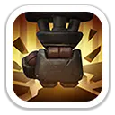
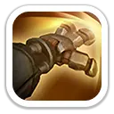
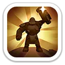

Кулаки разрушения
Урон + замедление атакиУдаряет стальными кулаками по земле, наносит цели урон и уменьшает её скорость атаки на 50% на 4 секунды.
120% / 132% / 144% / 156% / 168% от атаки

Танк · гарнизон · снижение урона противника
Логан — мифический пехотный герой 3 поколения, построенный вокруг выживаемости и защиты. Он снижает атаку вражеских войск, уменьшает получаемый армией урон и повышает здоровье всех войск. В бою героя его стальные кулаки замедляют скорость атаки противника, а броня накапливает защиту.
Максимальные базовые показатели героя.
Замедление, накопление защиты и дополнительный контроль.

Ударяет стальными кулаками по земле, наносит цели урон и уменьшает её скорость атаки на 50% на 4 секунды.
120% / 132% / 144% / 156% / 168% от атаки
После получения атак броня имеет шанс повысить защиту Логана на 2 секунды. Эффект может суммироваться до 5 раз.
Шанс: 8% / 10% / 12% / 14% / 16% · защита: +8% / +11% / +14% / +17% / +20%
Наносит урон целям в области перед собой. Есть 30% шанс оглушить поражённые цели на 1 секунду.
80% / 88% / 96% / 104% / 112% от атаки
Все три навыка работают на выживаемость отряда и особенно хорошо раскрываются в защите.

Понижает атаку всех вражеских войск.
−4% / −8% / −12% / −16% / −20%
Уменьшает урон, получаемый всеми войсками.
−4% / −8% / −12% / −16% / −20%

Повышает здоровье всех войск.
+5% / +10% / +15% / +20% / +25%
Эксклюзивное снаряжение усиливает самого Логана и его специализацию на гарнизоне.

Лучший сценарий для Логана. Его навыки снижают атаку врага, уменьшают входящий урон и повышают здоровье войск.
Хорош в затяжных боях и на передней линии, особенно если важнее пережить давление, чем быстро нанести максимум урона.
Полезен как танк: замедляет скорость атаки цели, накапливает защиту и иногда оглушает группу врагов.
Не приоритет. Защитные эффекты почти не помогают набивать урон по боссу.
Логан хорошо выполняет одну конкретную работу: держит удар. Если вы часто защищаете город, форты, здания или гарнизон, он полезен. Для F2P и игроков с ограниченными ресурсами разумнее открыть его и не гнаться за полной прокачкой: в 3 поколении Мия обычно даёт больше универсальной пользы, а уже следующее поколение приносит сильную замену для пехоты.
Проверено: 23 октября 2026.